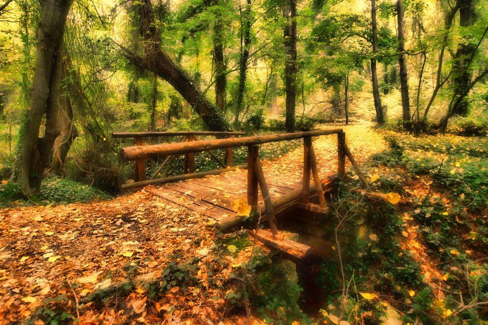

За парка
Най-малкият природен парк в България е „Златни пясъци”. Той обхваща площ от 13,2кв км. Разположен е на 17км на североизток от морската столица Варна, успоредно на морския бряг. Природният парк обгражда курортния комплекс Златни пясъци. Паркът е дълъг 9,2км, а средната му ширина е 1,2км. Най-високата точка е 269м, а средната надморска височина е 110м.
Паркът е създаден на 3 февруари 1943 година. Тогава с постановление на Министерството на земеделието и държавните имоти част от държавната гора Хачука с площ от 2,4кв км е обявена за народен парк „Златни пясъци”. Основната му цел е запазване и защита на ценни растителни и животински съобщества и характерни ландшафти. Природният парк е Защитена зона за опазване на природните местообитания и дивата флора и фауна, част от екологичната мрежа Натура 2000.
Климат
Климатът на парка е континентално-средиземноморски. Характеризира се с прохладна пролет, топло лято, топла и продължителна есен, мека зима с незначителни снеговалежи. Средната януарска температура е около 1°С. Лятото е топло и предимно слънчево. Средните месечни температури през лятото са около 21-22°С. Есента е по-топла от пролетта с 4-5°С. Средната годишна температура е +11,6°С.
Флора
Разнообразието от растителни съобщества е изключително голямо за малката площ на природния парк. Естествената растителност се характеризира с развитие на дървесни съобщества, доминирани от келяв габър (Carpinus orientalis), цер (Quercus cerris), благун (Quercus frainetto Ten.), космат дъб (Quercus pubescens), мъждрян (Fraxinus ornus) и др. Развитието на сублонгозна растителност в ниските части на парка е една от най-специфичните му особености - полски ясен (Fraxinus oxycarpa), полски бряст (Ulmus minor), летен дъб (Quercus robur), бяла топола (Populus alba), черна елша (Alnus glutinosa), висока скрипка (Smilax excelsa), гръцки гърбач (Periploca graeca) и др. В природен парк „Златни пясъци” се срещат над 150 вида лечебни растения.
Срещат се и множество представители на суб-средиземноморската флора – люляк (Syringa vulgaris), храстовиден смин (Jasminum fruticans), драка (Paliurus spina-christis), храстовидна зайчина (Сoronilla emerus), смрадлика (Cotinus coggygria) и др. Установени са 50 вида водорасли. Присъствието на червеното сладководно водорасло (Audouinella chalybaea) единствено в чешма „Ковшак” е свидетелство за доброто екологично състояние на водите в тази част на парка. В парка се наблюдават Myxomycota – лигави гъби, Ascomycota – торбести гъби, и Basidiomycota – базидиеви гъби, както и 77 вида и над 500 вида висши растения.
Фауна
Фауната е представена от 621 вида безгръбначни, 11 вида влечуги, 122 вида птици - 46 вида постоянно гнездящи, 40 вида – прелетни, грабливи и др.; 27 вида дребни бозайници, 14 вида едри бозайници и прилепи.